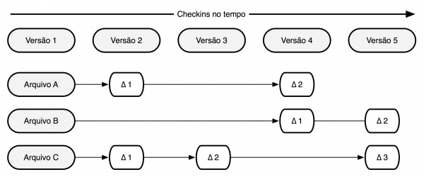
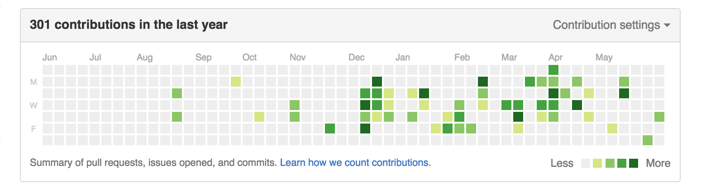
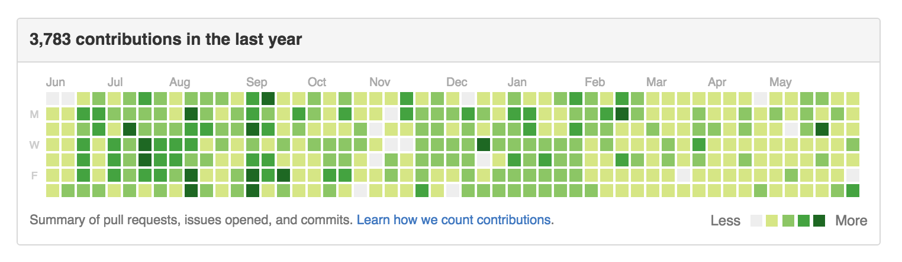

O que é o GDG ?
Google Developer Group
A quem interessa ?
O que ganhamos com o GDG ?
Conhecimento
Reconhecimento
Até onde o GDG Paulo Afonso pode ir ?
É isso ai.
Versionamento e projetos Open Source com Git e Github
Anchieta Jr.
O que é versionamento ou controle de versão?
"O controle de versão é um sistema que registra as mudanças feitas em um arquivo ou um conjunto de arquivos ao longo do tempo de forma que você possa recuperar versões específicas".
Controle de versão e o tempo

"Git é um sistema de controle de versão distribuído e um sistema de gerenciamento de código fonte, com ênfase em velocidade. O Git foi inicialmente projetado e desenvolvido por Linus Torvalds para o desenvolvimento do kernel Linux, mas foi adotado por muitos outros projetos".
O que é Open Source ?
- Linux
- Ruby
- Rails
- Angular
- Python
E o Github?

- Ferramenta de versionamento
- Hospedagem do código
- Download de projetos
- Contribuir
- Portfólio
Meu histórico de contribuições
Histórico do José Valim (Plataformatec)
Links legais
- Github - https://.github.com/
- Github Pages - https://pages.github.com/
Fim
Por Anchieta Júnior - GDG Organizer